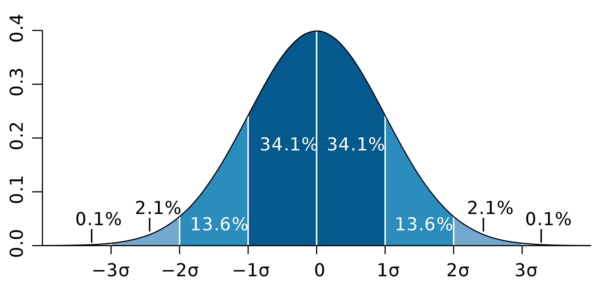

class: center, middle # Web Audio API vs. native, closing the gap Paul Adenot <span class="big logo">mozilla</span> Web Audio Conference 2019 NTDU, Trondheim, Norway --- class: center, middle # Web Audio API vs. native, closing the gap Paul Adenot <span class="big logo">mozilla</span> Web Audio Conference 2019 NTDU, Trondheim, Norway <span class=t2>TAKE 2</span> --- class: center, middle # Introduction --- class: center, middle # macOS users Install xcode and run `xcode-select --install` now ! Also I hope you don't have Catalina (10.15) --- class: center, middle # 2020 - Year of the `AudioWorklet` --- class: center, middle # It's time to aim higher --- # The standard native audio programming requirements - A low-latency true real-time input/output audio callback - Computational speed without garbage collection - Shared memory between threads - Atomic accesses to (shared) memory - SIMD --- # Native audio APIs characteristics - Real-time - Low-latency (small buffer size) --- # Real-time - Predictable run time (no gc, no waiting on something else, just computations) - Scheduled faster than other threads on the machine - Resilient against arbitraty machine load - CoreAudio, WASAPI, Jack, PulseAudio, Android OpenSL ES/AAudio, etc. --- # Low latency - Short code-to-ear time - Means small buffers - Buffer size != latency - A few dozen milliseconds typical for one-way latency (highly dependant on the OS, setup, driver, hardware, software, etc.) --- # Computational speed without GC - Traditionaly C++ (the industry standard), C - Assembly and SIMD instrinsics for hot code - Rust works very well and is way more ergonomic and modern - GC introduces non-determinism (even very good ones), can't be used --- # Shared memory between arbitraty threads - Can't afford to copy too much data (large audio buffers, etc.) - Can't afford block threads to communicate --- # Atomic accesses to (shared) memory - Allows writing the classic audio data structure, the SPSC wait-free ring buffer - Necessary to communicate without blocking and/or accessing too much atomics - Used for control message queues, audio FIFOs, etc. --- # SIMD - **S**ingle **I**nstruction, **M**ultiple **D**ata - Execute DSP code faster - That's it 👍 --- # Mapping to the web platform - Low latency real-time audio callback: `AudioContext`/`AudioWorklet` - Computational speed: WASM - Shared memory between threads: `SharedArrayBuffer` - Atomics accesses to shared memory: `Atomic` functions over `SharedArrayBuffer` - SIMD: Web Assembly 128-bit packed SIMD extension --- # Low latency real-time input/output audio callback - `AudioContext`/`AudioWorklet`/`getUserMedia` - Latency and resilience depending on browser/OS/drivers/hardware/direction of wind - Firefox on macOS and Linux/Jack: 128 frames buffer at the OS level (<10ms round trip) - True real-time thread on all platforms, nothing blocking - Coupled input-output streams, no extra buffering for round-trip - YMMV on other browsers --- # Computational speed: WASM - Write in C, C++, Rust, AssemblyScript, Faust, Soul, etc... - Predictable performances, portable anywhere: - All browser engines (Gecko/Blink/WebKit) - node.js - [Wasmtime](https://github.com/bytecodealliance/wasmtime) ! - High and deterministic performances, will only get faster (smarter compiler, more WASM features) --- # Shared memory between threads: `SharedArrayBuffer` - `SharedArrayBuffer` introduced a few years back - Spectre came and ruined everything - Back soon™ with special headers for security (a bit like CORS) - MDN article explaining everything: [Planned changes to shared memory](https://developer.mozilla.org/en-US/docs/Web/JavaScript/Reference/Global_Objects/SharedArrayBuffer/Planned_changes) --- # Shared memory between threads: `SharedArrayBuffer` - Special Firefox builds to try it out during the workshop (to avoid server setup etc.) - Caveat: quickly hacked up by a colleague for the purpose of this workshop, less responsive that a normal build, but WASM and Web Audio performances are representative of what's coming (should actually get faster) - Shows in devtools opening time, general tab bar responsiveness, etc. - Sorry 🙏 (it has a cool and edgy logo though) --- # Atomics accesses to shared memory: `Atomic` functions over `SharedArrayBuffer` - A bit weird to code for at first, not the end of the world - Don't use `Atomic.notify` and `Atomic.wait` in real-time code! - `Atomic.wait` is disabled on the main thread and in `AudioWorkletGlobalScope` anyways - Please think **extremely carefuly** when implementing lock-free data structure and/or borrow code from people who have battle tested/proven their implementation --- # SIMD: Web Assembly 128-bit packed SIMD extension - Roughly SSE2 like feature set - For audio, 4 32-bits floats per lane - IEEE754 arithmeric AND integer arithmetic - `min`/`max`/`shuffle`/`sqrt`/comparisons/saturating arithmetic - Chrome only for now, Firefox currently implementing ([bug 1478632](https://bugzilla.mozilla.org/show_bug.cgi?id=1478632)) --- # Shortcomings (at this time) - [Bulk memory operations](https://github.com/WebAssembly/bulk-memory-operations/blob/master/proposals/bulk-memory-operations/Overview.md) - [WASM threads](https://github.com/WebAssembly/threads/blob/master/proposals/threads/Overview.md) - [Multi memory](https://github.com/WebAssembly/multi-memory/blob/master/proposals/multi-memory/Overview.md) - WASM toolchain being readied for multi-threading, pretty rough right now - Rust WASM target works well (a few caveats) - Emscripten works OK, but not in standalone mode - No way to create other real-time threads on the Web Plaform right now, workers are too dangerous (priority inversion) --- class: center, middle # We're the end of the beginning of real-time audio on the Web --- # A little peak at the future - Rust multi-threaded raytracer using high-level concurrency primitives (`rayon`) - Compiled to WASM - Running on multiple threads - Communicating with lock free multiple-producer multiple consumer message queue compiled without modification from Rust - Using a `SharedArrayBuffer` for the WASM heap - [Demo](https://rustwasm.github.io/wasm-bindgen/exbuild/raytrace-parallel/) (Firefox only for now) --- # Another little peak at the future - Single producer single consumer wait-free general purpose or audio ring buffer written in C++11 **without code modification** - Unit/stress tests written using `std::thread` - Direct copy of production-quality code extracted from Firefox - Compiled with emscripten (one-liner `Makefile`) - [Demo](http://localhost:8886) (Firefox only for now) --- class: center, middle # Workshop time! --- # Workshop time ! - `git clone https://github.com/padenot/wac-19-audioworklet-workshop.git` - A little real-time programming primer - Compare WASM (C++/Rust) vs. JS for DSP code - Write DSP code like a native audio dev - Choose a language (C++/Rust code provided, others possible) - Write an `AudioWorletProcessor` that has fixed parameter value - Modify it to uses `postMessage` for parameter control - Modify it to only `postMessage` during setup, using `SharedArrayBuffer` for communication, and remove all GC pressure - Performance considerations and discussion --- class: center, middle # A little real-time programming primer --- class: center, middle # If you don’t know how long it will take, don’t do it. <div style="width:100%; text-align:right">— Ross Bencina </div> <div style="padding-top: 1em; font-size: 20px; width:100%; text-align:right"> <a href=http://www.rossbencina.com/code/real-time-audio-programming-101-time-waits-for-nothing>Real-time audio programming 101: time waits for nothing</a> </div> --- # Load and resilience test - <span class=math tex="Load"></span>, load factor, unitless - <span class=math tex="T_{rendering}"></span>, time it takes to render _n_ frames of audio - <span class=math tex="T_{duration}"></span>, duration of those _n_ frames of audio <span class="math center" tex="Load = \frac{T_{rendering}}{T_{duration}}"></span> - When load is < 1.0, it's OK - When load is> 1.0, it's over - A series of values, computed for _each_ audio callback --- # The standard deviation of the load matters </img> --- # Load standard deviation <span class="math center" tex="\displaystyle s={\sqrt {{\frac {1}{N-1}}\sum _{i=1}^{N}(x_{i}-{\bar {x}})^{2}}},"></span> > Square root of the sum of the differences between each values and the mean, squared --- # Why does it matter - Try to have the smallest standard deviation of the load, and decide on maximum "safe" load - Have a sense of the "real-timeness" of an algorithm - The [68–95–99.7 rule](https://en.wikipedia.org/wiki/68%E2%80%9395%E2%80%9399.7_rule) - Worst case time matters more than mean or median time --- # Load metrics for programmers Given an array `load` containing the load values: ```js // Mean var sum = 0; for (var i = 0; i < load.length; i++) { sum += load[i]; } var mean = sum / load.length; // Variance var variance = 0; for (var i = 0; i < load.length; i++) { variance += Math.pow(load[i] - mean, 2); } variance /= load.length; // Standard deviation stddev = Math.sqrt(variance); ``` --- # Firefox tooling ``` MOZ_LOG=AudioCallbackTracing:5,raw,sync \ MOZ_LOG_FILE=tracing.log ./firefox ``` This produces a "load trace", that can be used in a series of tools (Chromium/catapult trace format), but is just simple JSON. [MediaStreamGraph load analyzer](https://padenot.github.io/msg-load-analyzer/) is a web app that computes load metrics for a particular trace, detecting underruns --- # Try it on your machine - Get a build for your config (<https://pad.paul.cx/wac-19>) - Start the web server (`node server.js`) - Compare programming languages, browsers, machines, OS, hardware (headphones, speakers, external sound card, etc.) - Add internal load (something on the page doing something on the main thread) - Add external load (something on the machine, e.g. `stress --cpu 8` or <https://paul.cx/public/loadtest.html>) - Take measurements and determine what setup is preferable for a robust program --- # Feedback delay network - pre-delay - parallel or sequential delay lines or all passes - feedback path - diffusion matrix - low-pass for absorbtion - saturator to allow creative feedback effects --- class: small2, center <a style="" href="- https://github.com/padenot/wac-19-audioworklet-workshop">https://github.com/padenot/wac-19-audioworklet-workshop</a> --- class: small # Thanks ! <dl> <dt> Slides </dt> <dd> <a href="https://padenot.github.io/wac-19/workshop-slides/index.html">https://padenot.github.io/wac-19/workshop-slides/index.html</a><br> </dd> <dt>Email</dt> <dd><a href="mailto:padenot@mozilla.com"><code>padenot@mozilla.com</code></a></dd> <dt>Twitter</dt> <dd><a href="https://twitter.com/padenot">@padenot</a></dd> <dt>credits</dt> <dd> <div>Icons made by <a href="https://www.flaticon.com/authors/freepik" title="Freepik">Freepik</a> from <a href="https://www.flaticon.com/" title="Flaticon">www.flaticon.com</a></div> </dd> </dl>